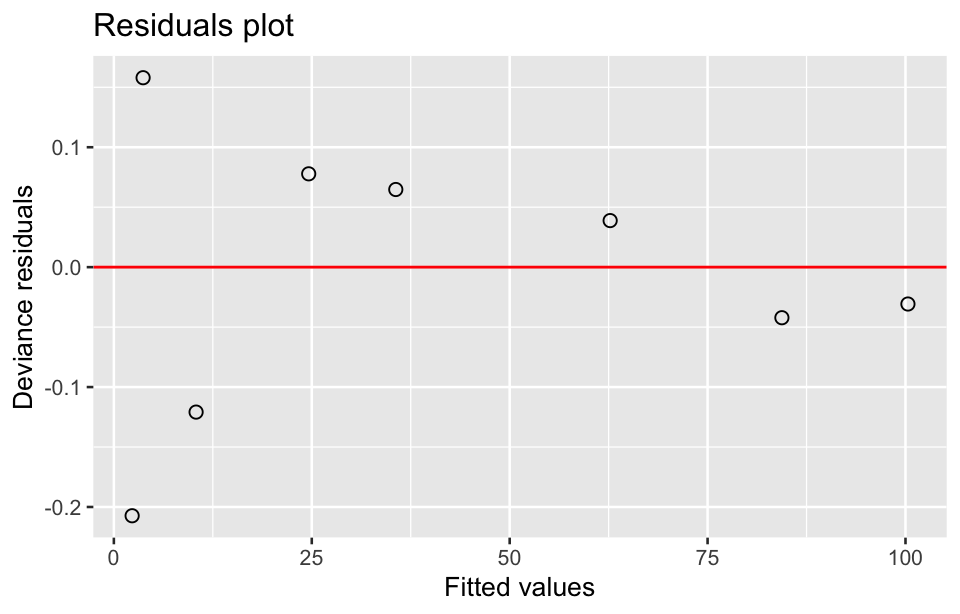
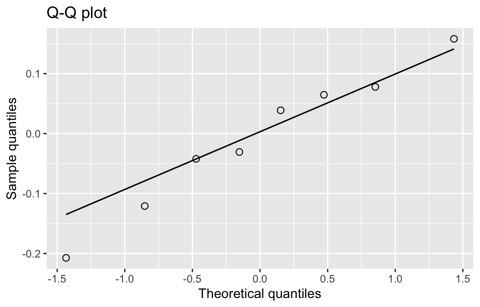
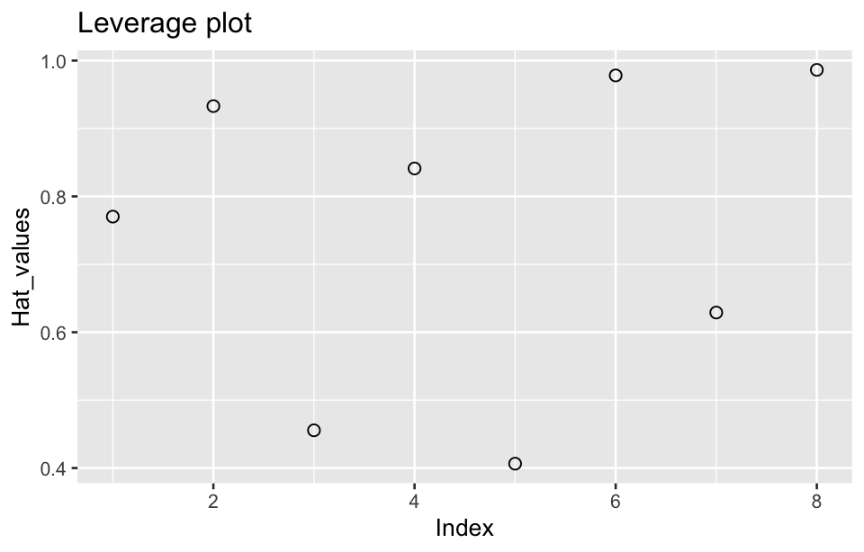
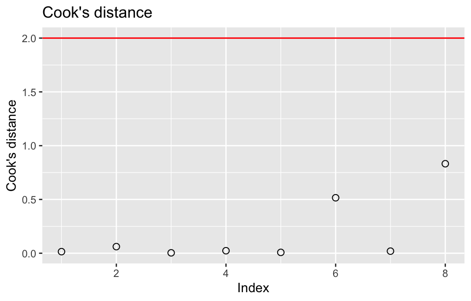

library(tidyverse)
library(ggplot2)20 Generalized linear model
A generalized linear model (GLM) is a flexible generalization of ordinary linear regression that allows for response variables that have error distribution models other than a normal distribution. GLMs are widely used in various fields, including medical statistics, economics, and social sciences, as they provide a robust framework to model different types of data and relationships.
20.1 Prerequisite
20.2 Components of GLM
A generalized linear model consists of three main components:
Random component
Specifies the probability distribution of the response variable Y. Unlike linear regression, where Y is assumed to follow a normal distribution, GLMs allow for different distributions from the exponential family, such as normal distribution, binomial distribution, Poisson distribution, Gamma distribution.
Systematic component
This refers to the linear predictor, which is the linear combination of the explanatory (independent) variables. It is similar to the equation used in linear regression:
\eta = \beta_0 + \beta_1 X_1 + \beta_2 X_2 + \dots + \beta_p X_p where \eta is the linear predictor, \beta_0, \beta_1, \dots, \beta_p are the regression coefficients, X_1, X_2, \dots, X_p are the independent variables.
Link function
The link function connects the linear predictor \eta to the mean of the response variable. This is important because, in many cases, the response variable’s distribution and scale are not appropriate for direct use in a linear equation. The most commonly used link functions are:
- Identity link (for normal distribution): \eta = \mu
- Logit link (for binomial distribution): \eta = \ln \left( \frac{\mu}{1 - \mu} \right)
- Log link (for Poisson distribution): \eta = \ln(\mu)
- Inverse link (for gamma distribution): \eta = \mu^{-1}, \ \text{where} \ \mu is the expected value of Y.
where \mu is the expected value of Y.
The general form of a GLM is:
\text{g}(\mu_i) = \beta_0 + \beta_1 X_1 + \dots + \beta_p X_p
where g(\mu_i) is the link function that relates the expected value \mu_i of the response variable Y_i to the linear predictor.
Below are some common distributions and their link functions:
| Distribution | Dependent variable | Link function | Common model |
|---|---|---|---|
| Normal distribution | Continuous data | Identity g(\mu) = \mu | Linear regression |
| Binomial distribution | Binary data | Logit g(\mu) = ln(\mu / (1 - \mu)) | Logistic regression |
| Poisson distribution | Count data | Log g(\mu) = ln(\mu) | Poisson regression |
| Gamma distribution | Positive continuous data | Inverse g(\mu) = 1 / \mu | Gamma regression |
| Inverse Gaussian distribution | Positive skewed continuous data | Inverse squared g(\mu) = 1 / \mu^2 | Inverse Gaussian regression |
| Multinomial distribution | Categorical data | Multinomial Logit g(\mu) = ln(\mu_j / \mu_K) | Multinomial logistic regression |
The GLMs are used to model relationships between clinical predictors and outcomes, where the response variable can follow different distributions (e.g., binomial, Poisson). The correct specification of the link function and distribution is critical for drawing valid inferences.
20.3 Log-linear model
Log-linear model is often used to describe the relationship between categorical variables in a contingency table by modeling the natural logarithm of the expected cell frequencies as a linear combination of parameters. This model is often applied to multidimensional categorical data and is particularly useful for exploring interactions between categorical variables.
The general form for a 3-way table with variables X_1 , X_2, and X_3 is:
\ln(\mu_{ijk}) = \lambda + \lambda_{i}^{(X_1)} + \lambda_{j}^{(X_2)} + \lambda_{k}^{(X_3)} + \lambda_{ij}^{(X_1 X_2)} + \lambda_{ik}^{(X_1 X_3)} + \lambda_{jk}^{(X_2 X_3)} + \lambda_{ijk}^{(X_1 X_2 X_3)}
where \mu_{ijk} is the expected frequency for the combination of category i, j, and k, \lambda is an intercept term (overall mean), \lambda_{i}^{(X_1)}, \lambda_{j}^{(X_2)}, and \lambda_{k}^{(X_3)}are the main effects for each variable,\lambda_{ij}^{(X_1 X_2)}, \lambda_{ik}^{(X_1 X_3)}, and \lambda_{jk}^{(X_2 X_3)} are the interaction effects between pairs of variables, \lambda_{ijk}^{(X_1 X_2 X_3)} is the three-way interaction term among the three variables.
There are several types of log-linear models, depending on the complexity of the relationships they model. These include:
Independence model
This assumes that all variables are independent of each other, meaning no interaction terms are included. For a three-way table, the model looks like:
\ln(\mu_{ijk}) = \lambda + \lambda_{i}^{(X_1)} + \lambda_{j}^{(X_2)} + \lambda_{k}^{(X_3)}
This model assumes no association between variables X_1 , X_2 , and X_3 .
Interaction model
This model includes interactions between two or more variables. For example, a model that includes two-way interactions but excludes higher-order interactions is:
\ln(\mu_{ijk}) = \lambda + \lambda_{i}^{(X_1)} + \lambda_{j}^{(X_2)} + \lambda_{k}^{(X_3)} + \lambda_{ij}^{(X_1 X_2)} + \lambda_{ik}^{(X_1 X_3)} + \lambda_{jk}^{(X_2 X_3)} This allows for interaction between pairs of variables but not all three variables together.
Saturated model
This includes all possible main effects and interactions (up to the highest order), fully describing the relationships between the variables:
\ln(\mu_{ijk}) = \lambda + \lambda_{i}^{(X_1)} + \lambda_{j}^{(X_2)} + \lambda_{k}^{(X_3)} + \lambda_{ij}^{(X_1 X_2)} + \lambda_{ik}^{(X_1 X_3)} + \lambda_{jk}^{(X_2 X_3)} + \lambda_{ijk}^{(X_1 X_2 X_3)}
This model perfectly fits the observed data but might overfit if the data set is small.
These types of log-linear models allow flexibility in modeling categorical data, from simple independence models to complex interaction models depending on the structure and hypotheses in the data.
Log-linear models have several key applications, particularly in the analysis of categorical data in contingency tables.
- Contingency table analysis: Log-linear models are commonly used to analyze contingency tables, where they provide a way to model and test for associations between multiple categorical variables.
- Interaction analysis: Log-linear models are ideal for identifying interaction effects between multiple categorical variables. For example, they can help understand if a response variable depends on combinations of two or more predictors.
- Association testing: Log-linear models allow testing hypothesis about the independence or association between categorical variables in multi-way tables.
Researchers often fit both saturated (fully interactive) and reduced models to identify which interactions and main effects are statistically significant. The interpretation is based on the estimated parameters, which represent the log of the odds ratios. Understanding these parameters is crucial in drawing meaningful conclusions about the relationships between variables.
Log-linear models are powerful tools for exploring multi-way relationships between categorical variables, making them widely applicable across various fields of research.
20.3.1 Goodness-of-fit test
The goodness-of-fit test in log-linear model is used to assess how well the model fits the observed data. Two main tests are typically used for this purpose:
Likelihood ratio test
The likelihood ratio test (also called the deviance test) compares the deviance of a fitted log-linear model to the deviance of a saturated model (a model with as many parameters as data points). The deviance D is calculated as:
D = 2 \sum O \cdot \ln \left( \frac{O}{E} \right)
where O are the observed cell frequencies, and E are the expected cell frequencies under the model.
The deviance follows a chi-square distribution with degrees of freedom equal to the difference in the number of parameters between the two models. If the p-value is small (e.g., less than 0.05), the null hypothesis is rejected, indicating that the model does not fit the data well.
Pearson chi-square test
The Pearson chi-square test is an alternative goodness-of-fit test for log-linear models, which measures the discrepancy between observed and expected frequencies. The test statistic is:
\chi^2 = \sum \frac{(O - E)^2}{E}
Like the deviance test, the Pearson chi-square statistic follows a chi-square distribution with degrees of freedom based on the number of cells and the number of parameters. If the p-value from the chi-square test is significant, the model does not provide a good fit.
20.3.2 Parameter estimation
The parameters are usually estimated using maximum likelihood estimation (MLE). This method finds the parameter values that maximize the likelihood function L(\beta), which represents the probability of observing the given data under the model. The log-likelihood function is often maximized instead of the likelihood because it is easier to work with sums of logs rather than products. In practice, MLE is often solved using iterative algorithms like iteratively reweighted least squares or Newton-Raphson.
Interpretation of parameters
The coefficients \lambda reflect the log odds ratios for the associations between the variables. If the interaction terms are significant, it indicates that there are interactions between the variables.
A positive parameter estimate for an interaction term (e.g., \lambda^{XY}) suggests that the odds of the joint occurrence of X and Y increase relative to the marginal effects. A negative estimate indicates a negative association between the variables.
Testing parameter significance
The significance of individual parameters can be tested using Wald tests or likelihood ratio tests. The Wald test assesses whether each estimated coefficient is significantly different from zero:
z = \frac{\hat{\beta}}{\text{SE}(\hat{\beta})}
The test statistic follows a standard normal distribution, and a significant test indicates that the parameter contributes significantly to the model.
Example 1
A study employed a case-control design to investigate the impact of maternal education level on growth and developmental delays in children under the age of 5. A total of 173 cases (children with developmental delays) and 173 controls (children with normal development) were surveyed, including their mothers’ education levels.
tb <- read_csv("datasets/ex20-01.csv", show_col_types = F) |>
mutate(
edu = factor(edu),
grow = factor(grow),
edu = relevel(edu, ref = 3),
grow = relevel(grow, ref = 2)
)You can fit log-linear models using the loglm() function from the MASS package or the glm() function with a Poisson family specification.
fit <- MASS::loglm(f ~ edu + grow, data = tb)
fit1 <- update(fit, .~.^2)
#fit2 <- step(fit1, direction = "backward")
anova(fit, fit1)- 1
-
The
step()may not work properly withloglm()object when there is only when independent variable left in the model. However,glm()object does.
#> LR tests for hierarchical log-linear models
#>
#> Model 1:
#> f ~ edu + grow
#> Model 2:
#> f ~ edu + grow + edu:grow
#>
#> Deviance df Delta(Dev) Delta(df) P(> Delta(Dev)
#> Model 1 0.4585613 2
#> Model 2 0.0000000 0 0.4585613 2 0.79511
#> Saturated 0.0000000 0 0.0000000 0 1.00000The results show that the p-value for the likelihood ratio test is 0.79511, which is much larger than the typical significance level (0.05). This shows there is no significant improvement in fit by adding the interaction term (edu:grow) to the model. Therefore, the simpler Model 1 without the interaction is sufficient, and there is no strong evidence that the interaction between maternal education and child growth is important for explaining the data.
Thus, the simpler model (main effects only) is preferred because the interaction term does not significantly improve the model fit.
glm_fit <- glm(f ~ edu + grow, family = poisson(link = "log"), data = tb)
glm_fit1 <- update(glm_fit, .~.^2)
glm_fit2 <- step(glm_fit1, direction = "backward", trace = 1)#> Start: AIC=47.08
#> f ~ edu + grow + edu:grow
#>
#> Df Deviance AIC
#> - edu:grow 2 0.45856 43.536
#> <none> 0.00000 47.078
#>
#> Step: AIC=43.54
#> f ~ edu + grow
#>
#> Df Deviance AIC
#> - grow 1 0.459 41.536
#> <none> 0.459 43.536
#> - edu 2 34.927 74.005
#>
#> Step: AIC=41.54
#> f ~ edu
#>
#> Df Deviance AIC
#> <none> 0.459 41.536
#> - edu 2 34.927 72.005anova(glm_fit2, glm_fit, glm_fit1)#> Analysis of Deviance Table
#>
#> Model 1: f ~ edu
#> Model 2: f ~ edu + grow
#> Model 3: f ~ edu + grow + edu:grow
#> Resid. Df Resid. Dev Df Deviance Pr(>Chi)
#> 1 3 0.45856
#> 2 2 0.45856 1 0.00000
#> 3 0 0.00000 2 0.45856 0.7951
Results
There is no significant improvement in model fit when adding grow (Model 2) or the interaction term edu:grow (Model 3). Model 1 (with only edu) may be sufficient, as adding more terms does not significantly enhance the fit.
In this context, the p-value is 0.7951, same to that from the likelihood ratio test made above.
The parameters of the final fitting model can be retrieved using the code below:
glm_fit2 |> coef() #> (Intercept) edu1 edu2
#> 3.8918203 0.5330263 -0.1905183The regression equation is as follows:
equatiomatic::extract_eq(glm_fit2, use_coefs = T, coef_digits = 5)\log ({ \widehat{E( \operatorname{f} )} }) = 3.89182 + 0.53303(\operatorname{edu}_{\operatorname{1}}) - 0.19052(\operatorname{edu}_{\operatorname{2}})
Example 2
A case-control study was conducted to investigate the role of contraceptives and the allele of clotting factor V-Leiden in the development of venous thrombosis. A total of 324 people were investigated, including 155 cases and 169 controls. Analyze the interaction between contraceptive use and the gene.
tb <- read_csv("datasets/ex20-02.csv", show_col_types = F) |>
mutate(
grp = factor(grp),
expo = factor(expo),
gtype = factor(gtype),
grp = relevel(grp, ref = 2),
expo = relevel(expo, ref = 2),
gtype = relevel(gtype, ref = 2)
)fit <- MASS::loglm(f ~ grp + expo + gtype, data = tb)
fit1 <- update(fit, .~.^2)
fit2 <- update(fit, .~.^3)
fit3 <- step(fit2, direction = "backward", trace = 1)#> Start: AIC=16
#> f ~ grp + expo + gtype + grp:expo + grp:gtype + expo:gtype +
#> grp:expo:gtype
#>
#> Df AIC
#> - grp:expo:gtype 1 14.096
#> <none> 16.000
#>
#> Step: AIC=14.1
#> f ~ grp + expo + gtype + grp:expo + grp:gtype + expo:gtype
#>
#> Df AIC
#> - expo:gtype 1 12.097
#> <none> 14.096
#> - grp:gtype 1 37.909
#> - grp:expo 1 42.920
#>
#> Step: AIC=12.1
#> f ~ grp + expo + gtype + grp:expo + grp:gtype
#>
#> Df AIC
#> <none> 12.097
#> - grp:gtype 1 38.751
#> - grp:expo 1 43.762anova(fit, fit1, fit2, fit3)#> LR tests for hierarchical log-linear models
#>
#> Model 1:
#> f ~ grp + expo + gtype
#> Model 2:
#> f ~ grp + expo + gtype + grp:expo + grp:gtype
#> Model 3:
#> f ~ grp + expo + gtype + grp:expo + grp:gtype + expo:gtype
#> Model 4:
#> f ~ grp + expo + gtype + grp:expo + grp:gtype + expo:gtype + grp:expo:gtype
#>
#> Deviance df Delta(Dev) Delta(df) P(> Delta(Dev)
#> Model 1 62.41639390 4
#> Model 2 0.09702652 2 6.231937e+01 2 0.00000
#> Model 3 0.09613097 1 8.955578e-04 1 0.97613
#> Model 4 0.00000000 0 9.613097e-02 1 0.75652
#> Saturated 0.00000000 0 0.000000e+00 0 1.00000glm_fit <- glm(f ~ grp + expo + gtype, family = poisson(link = "log"), data = tb)
glm_fit1 <- update(glm_fit, .~.^2)
glm_fit2 <- update(glm_fit, .~.^3)
glm_fit3 <- step(glm_fit2, direction = "backward", trace = 1)#> Start: AIC=55.23
#> f ~ grp + expo + gtype + grp:expo + grp:gtype + expo:gtype +
#> grp:expo:gtype
#>
#> Df Deviance AIC
#> - grp:expo:gtype 1 0.096129 53.321
#> <none> 0.000000 55.225
#>
#> Step: AIC=53.32
#> f ~ grp + expo + gtype + grp:expo + grp:gtype + expo:gtype
#>
#> Df Deviance AIC
#> - expo:gtype 1 0.0970 51.322
#> <none> 0.0961 53.321
#> - grp:gtype 1 25.9093 77.134
#> - grp:expo 1 30.9197 82.145
#>
#> Step: AIC=51.32
#> f ~ grp + expo + gtype + grp:expo + grp:gtype
#>
#> Df Deviance AIC
#> <none> 0.097 51.322
#> - grp:gtype 1 28.751 77.977
#> - grp:expo 1 33.762 82.987anova(glm_fit, glm_fit3, glm_fit1, glm_fit2)#> Analysis of Deviance Table
#>
#> Model 1: f ~ grp + expo + gtype
#> Model 2: f ~ grp + expo + gtype + grp:expo + grp:gtype
#> Model 3: f ~ grp + expo + gtype + grp:expo + grp:gtype + expo:gtype
#> Model 4: f ~ grp + expo + gtype + grp:expo + grp:gtype + expo:gtype +
#> grp:expo:gtype
#> Resid. Df Resid. Dev Df Deviance Pr(>Chi)
#> 1 4 62.416
#> 2 2 0.097 2 62.319 2.934e-14 ***
#> 3 1 0.096 1 0.001 0.9761
#> 4 0 0.000 1 0.096 0.7565
#> ---
#> Signif. codes: 0 '***' 0.001 '**' 0.01 '*' 0.05 '.' 0.1 ' ' 1
Results
Model 2 shows a significant improvement over Model 1, suggesting that the interaction terms grp:expo and grp:gtype significantly improve the model’s fit. Model 3 and Model 4 show no significant improvement over Model 2, with p-values above 0.75, meaning that adding the interaction term expo:gtype or the three-way interaction does not significantly improve the fit.
Thus, Model 2 is the most appropriate model, as it includes the important two-way interaction terms and significantly improves the fit without overcomplicating the model.
The regression coefficients of the final fitting model is:
opt_model <- glm(
f ~ grp * expo * gtype,
family = poisson(link = "log"),
data = tb) |>
step(direction = "backward", trace = 0)
coef(opt_model)#> (Intercept) grp1 expo1 gtype1 grp1:expo1 grp1:gtype1
#> 4.6082424 -1.0355344 -0.4700036 -3.3019907 1.3327101 2.0698471The regression equation is as follows:
equatiomatic::extract_eq(opt_model, use_coefs = T, coef_digits = 5)\log ({ \widehat{E( \operatorname{f} )} }) = 4.60824 - 1.03553(\operatorname{grp}_{\operatorname{1}}) - 0.47(\operatorname{\expo}_{\operatorname{1}}) - 3.30199(\operatorname{gtype}_{\operatorname{1}}) + 1.33271(\operatorname{grp}_{\operatorname{1}} \times \operatorname{\expo}_{\operatorname{1}}) + 2.06985(\operatorname{grp}_{\operatorname{1}} \times \operatorname{gtype}_{\operatorname{1}})
Residual analysis helps in assessing whether your model fits the data well and whether the assumptions of the model are met. Here’s how you can conduct residual analysis for your generalized linear model:
df <- tibble(
dev_resid = residuals(opt_model, type = "deviance"),
fit_value = fitted.values(opt_model))
# Plot residuals vs fitted values
ggplot(df, aes(fit_value, dev_resid)) +
geom_point(shape = 1, size = 2) +
geom_hline(yintercept = 0, col = "red")+
labs(
x = "Fitted values",
y = "Deviance residuals",
title = "Residuals plot"
)
# Q-Q plot
ggplot(df, aes(sample = dev_resid)) +
geom_qq(shape = 1, size = 2) +
geom_qq_line() +
labs(x = "Theoretical quantiles", y = "Sample quantiles", title = "Q-Q plot")
# Leverage plot
tibble(
hat_value = hatvalues(opt_model),
index = c(1:length(hat_value))) |>
ggplot(aes(index, hat_value)) +
geom_point(shape = 1, size = 2) +
labs(x = "Index", y = "Hat_values", title = "Leverage plot")
# Cook's distance
tibble(
cooks_dis = cooks.distance(opt_model),
index = c(1:length(cooks_dis))) |>
ggplot(aes(index, cooks_dis)) +
geom_point(shape = 1, size = 2) +
geom_hline(yintercept = 4/(nrow(df)-length(coef(opt_model))), col = "red") +
labs(x = "Index", y = "Cook's distance", title = "Cook's distance")


Interpretation
If the residuals are randomly scattered around zero in the Residuals plot, and the Q-Q plot follows a straight line, your model fits well.
Observations with high leverage or high Cook’s distance might indicate influential points. You may want to examine these data points closely.
This analysis helps assess the final model’s fit and identify any potential issues such as outliers or non-linearity.
20.4 Poisson regression
Poisson regression is a type of generalized linear model used for count data. It is particularly useful when the dependent variable represents counts of events that occur independently over a fixed period of time or space. The model assumes that the count data follows a Poisson distribution.
The natural logarithm is used as the link function, connecting the linear predictor to the expected value of the response variable. This means that the model predicts the logarithm of the expected count. It assumes that the events are independent, and the mean and variance of the counts are equal.
The general form of a Poisson regression model can be expressed as:
\ln(\lambda_i) = \beta_0 + \beta_1 X_{i1} + \beta_2 X_{i2} + \ldots + \beta_k X_{ik}
where \lambda is the expected count for the i-th observation, X_{i1}, X_{i2}, \ldots, X_{ik} are the predictor variables, \beta_0, \beta_1, \ldots, \beta_k are the coefficients to be estimated.
A Poisson regression model with an offset is used when the rate of occurrence of events is being modeled, rather than the raw counts. The offset allows the model to account for different exposure times or different sizes of population at risk. In this case, the model becomes:
\ln(\lambda_i) = \beta_0 + \beta_1 X_{i1} + \beta_2 X_{i2} + \ldots + \beta_p X_{ik} + \log(t_i)
where t_i is the offset (often the exposure time or population size for each observation). The offset is added to the linear predictor as \log(t_i), and it is treated as a known value rather than a variable for which a coefficient is estimated.
This adjustment is essential when the time or population at risk differs across observations.
20.4.1 Goodness-of-fit test
Goodness-of-fit tests are used to assess how well the model fits the data. Here are some common methods to conduct goodness-of-fit tests for Poisson regression.
Deviance and Pearson tests
Deviance is the most commonly used goodness-of-fit statistic in Poisson regression. It compares the model’s deviance to its degrees of freedom to assess the fit.
Pearson test involves calculating the sum of squared Pearson residuals and comparing it to its degrees of freedom.
Likelihood ratio test
This test compares the likelihood functions of the full model and a reduced model to determine whether adding significant variables improves the model fit.
20.4.2 Parameters estimation
The parameters are estimated by maximizing the likelihood function, which for the Poisson distribution is given by:
L(\beta) = \prod_{i=1}^n \frac{e^{-\lambda_i} \lambda_i^{Y_i}}{Y_i!}
To simplify the computation, the log-likelihood function is typically used. It is written as:
\log L(\beta) = \sum_{i=1}^{n} \left( Y_i \log(\lambda_i) - \lambda_i - \log(Y_i!) \right)
Substituting \lambda_i = e^{X_i \beta} into the equation, we get:
\log L(\beta) = \sum_{i=1}^{n} \left( Y_i (X_i \beta) - e^{X_i \beta} - \log(Y_i!) \right)
where \lambda_i = e^{X_i \beta}, representing the expected count for observation i, determined by the independent variables X_i and regression coefficients \beta, Y_i is the observed count for the i-th observation.
By maximizing this log-likelihood function, the regression coefficients \beta can be estimated for the Poisson regression model.
To assess whether a predictor is statistically significant, calculate the Z statistic:
Z = \frac{\hat{\beta}}{\text{SE}(\hat{\beta})}
where \hat{\beta} is the estimated coefficient and \text{SE}(\hat{\beta}) is the standard error. The p-value is obtained from the standard normal distribution based on the calculated z-value. If the p-value is less than the significance level (commonly 0.05), reject the null hypothesis, indicating that the predictor is statistically significant.
Example 3
A researcher conducted a retrospective cohort study to investigate the relationship between arsenic exposure in a smelting plant and deaths due to respiratory diseases among the plant’s employees from 1978 to 2009. The data can be download below. Please analyze this data.
tb <- read_csv("datasets/ex20-03.csv", show_col_types = F) |>
mutate(
AsExpo = factor(AsExpo, labels = c("As.No", "As.Yes")),
ageGroup = factor(ageGroup, labels = c("40~49", "50~59", "60~69", ">=70")),
nDeath = as.integer(nDeath),
nTotal = as.integer(round(nTotal))
) tb |>
pivot_wider(
names_from = AsExpo,
values_from = c(nDeath, nTotal)
) |>
knitr::kable(align = "c") | ageGroup | nDeath_As.Yes | nDeath_As.No | nTotal_As.Yes | nTotal_As.No |
|---|---|---|---|---|
| 40~49 | 7 | 14 | 11026 | 38337 |
| 50~59 | 42 | 38 | 10792 | 31019 |
| 60~69 | 59 | 58 | 6898 | 17496 |
| >=70 | 17 | 41 | 2581 | 6842 |
You can use the glm() function to fit a Poisson regression model.
model <- glm(
nDeath ~ AsExpo + ageGroup,
family = poisson(link = "log"),
data = tb,
offset = log(nTotal)
)
Offset
The inclusion of the log(nTotal) as an offset allows us to model the mortality rate per person-year rather than just the raw number of deaths.
Without the offset, the model would compare the total number of deaths, which could lead to misleading conclusions if one age group simply had more number of deaths or more years than another. By using person-years as an offset, we adjust for this variability and focus on the mortality rate, making the comparison more meaningful.
This method is commonly used in epidemiology to model incidence rates for diseases, infections, or other health outcomes while adjusting for varying follow-up times or population sizes.
The coef() function can print the regression coefficients:
coef(model)#> (Intercept) AsExpoAs.Yes ageGroup50~59 ageGroup60~69 ageGroup>=70
#> -8.0086462 0.8108583 1.4701581 2.3660912 2.6237690The regression equation is:
equatiomatic::extract_eq(model, use_coefs = T, coef_digits = 5)\log ({ \widehat{E( \operatorname{nDeath} )} }) = -8.00865 + 0.81086(\operatorname{AsExpo}_{\operatorname{As.Yes}}) + 1.47016(\operatorname{ageGroup}_{\operatorname{50\char`\~59}}) + 2.36609(\operatorname{ageGroup}_{\operatorname{60\char`\~69}}) + 2.62377(\operatorname{ageGroup}_{\operatorname{>=70}}) + \operatorname{(offset)}
Use the summary() function to evaluate the parameter estimates, significance of predictors, and goodness-of-fit.
summary(model)#>
#> Call:
#> glm(formula = nDeath ~ AsExpo + ageGroup, family = poisson(link = "log"),
#> data = tb, offset = log(nTotal))
#>
#> Coefficients:
#> Estimate Std. Error z value Pr(>|z|)
#> (Intercept) -8.0086 0.2233 -35.859 < 2e-16 ***
#> AsExpoAs.Yes 0.8109 0.1210 6.699 2.09e-11 ***
#> ageGroup50~59 1.4702 0.2453 5.994 2.04e-09 ***
#> ageGroup60~69 2.3661 0.2372 9.976 < 2e-16 ***
#> ageGroup>=70 2.6238 0.2548 10.297 < 2e-16 ***
#> ---
#> Signif. codes: 0 '***' 0.001 '**' 0.01 '*' 0.05 '.' 0.1 ' ' 1
#>
#> (Dispersion parameter for poisson family taken to be 1)
#>
#> Null deviance: 260.9311 on 7 degrees of freedom
#> Residual deviance: 9.9323 on 3 degrees of freedom
#> AIC: 61.344
#>
#> Number of Fisher Scoring iterations: 4This Poisson regression model analyzes the relationship between arsenic exposure (AsExpo), age groups (ageGroup), and the number of deaths from respiratory diseases (nDeath). The model includes an offset (nTotal), which represents the total number of individuals at risk or the total exposure time, to adjust for varying group sizes or follow-up durations.
Here’s a breakdown of the results:
Coefficients
- (Intercept): -8.0086: The intercept represents the baseline log mortality rate for the reference group, which in this case is those not exposed to arsenic (AsExpo = “No”) and in the <50 age group. The estimate of -8.0086 suggests a very low baseline mortality rate when exponentiated.
- AsExpoYes: 0.8109: The coefficient for arsenic exposure (Yes) indicates that the log mortality rate is increased by 0.8109 units for those exposed to arsenic compared to those not exposed. Exponentiating this value (\exp(0.8109) = 2.25) suggests that arsenic exposure increases the mortality rate by about 125% compared to those unexposed.
- ageGroup50~59: 1.4702: For individuals aged 50-59, the log mortality rate increases by 1.4702 units compared to those under 50. Exponentiating this value (\exp(1.4702) = 4.35) shows that the mortality rate is approximately 4.35 times higher for this age group compared to those under 50.
- ageGroup60~69: 2.3661: For individuals aged 60-69, the log mortality rate increases by 2.3661 units. Exponentiating this value (\exp(2.3661) = 10.65) indicates that the mortality rate is about 10.65 times higher for this age group compared to the <50 group.
- ageGroup>=70: 2.6238: For individuals aged 70 or older, the log mortality rate increases by 2.6238 units. Exponentiating this value (\exp(2.6238) = 13.78) indicates that the mortality rate is 13.78 times higher for this age group compared to the reference (<50) group.
Statistical significance
- The p-values for all variables are very small (<0.001), indicating that arsenic exposure and all age groups are significantly associated with increased mortality rates.
Model fit
- Residual Deviance: 9.9323 on 3 degrees of freedom. This indicates how well the model fits the data. The small residual deviance relative to the degrees of freedom suggests a good fit, meaning the model explains most of the variability in the data.
- Null Deviance: 260.9311 on 7 degrees of freedom. The null deviance represents the deviance of a model with no predictors, just an intercept. A large difference between null and residual deviance indicates that the predictors significantly improve the model fit.
- The AIC (61.344) is a measure of model quality, with lower values indicating a better fit. It’s useful when comparing models to select the best one.
Key findings- Arsenic exposure significantly increases the mortality rate (about 125% increase).
- Age is also a strong predictor, with older age groups showing exponentially higher mortality rates.
- The model fits the data well, as evidenced by the low residual deviance and significant predictors.
If the residual deviance is significantly larger than the degrees of freedom, it may indicate overdispersion, suggesting that the Poisson model may not be appropriate. In such cases, consider using a negative binomial regression or adjusting the model accordingly.
20.5 Negative binomial regression
In Poisson regression, the assumption is that the mean (\lambda) and variance of the dependent variable are equal. When this assumption is violated (i.e., the data is overdispersed), the model may underestimate the standard errors, leading to misleading p-values and confidence intervals.
Negative binomial regression is an extension of Poisson regression that is used when the data exhibits overdispersion—meaning the variance is larger than the mean. The negative binomial regression introduces an extra parameter, called the dispersion parameter or overdispersion parameter, to account for the excess variability.
- Poisson regression: \text{var}(Y) = \mu
- Negative binomial regression: \text{var}(Y) = \mu + \frac{\mu^2}{\theta},
where \theta is the dispersion parameter (overdispersion parameter). When \theta \to \infty, the negative binomial model reduces to a Poisson model.
The mean of the response variable Y_i is related to the predictors X_{i1}, X_{i2}, \dots, X_{ik} through the following log-linear relationship:
\log(\mu_i) = \beta_0 + \beta_1 X_{i1} + \beta_2 X_{i2} + \dots + \beta_k X_{ik}
where \mu_i is the expected count (the mean of Y_i) for the i-th observation, X_{i1}, X_{i2}, \dots, X_{ik} are the predictor variables, \beta_0, \beta_1, \beta_2, \dots, \beta_k are the coefficients estimated from the data.
Example 4
A researcher conducted a study to investigate the relationship between types of residence and the breeding of mosquito larvae by surveying 299 households from different types of residences. The results are shown in Table 20.1 . Please use an appropriate statistical method to analyze this data.
tb <- read_csv("datasets/ex20-04.csv", col_types = list(resType = col_factor())) |>
mutate(
resType = factor(resType, labels = c("rural", "barriada", "urban"))
)| nContainer | nFamily.rural | nFamily.barriada | nFamily.urban | nFamily.total |
|---|---|---|---|---|
| 0 | 136 | 38 | 67 | 241 |
| 1 | 23 | 8 | 5 | 36 |
| 2 | 10 | 2 | 0 | 12 |
| 3 | 5 | 0 | 0 | 5 |
| 4 | 2 | 0 | 0 | 2 |
| 5 | 1 | 0 | 0 | 1 |
| 6 | 1 | 0 | 0 | 1 |
| 11 | 1 | 0 | 0 | 1 |
| Total | 179 | 48 | 72 | 299 |
You can fit a negative binomial regression using the glm.nb() function from the MASS package:
neg.bin_fit <- MASS::glm.nb(nContainer ~ resType, data = tb, weights = nFamily)
poisson_fit <- glm(nContainer ~ resType, family = poisson, data = tb, weights = nFamily)
AIC(neg.bin_fit, poisson_fit)#> df AIC
#> neg.bin_fit 4 426.2283
#> poisson_fit 3 505.9154AIC is a measure used for model selection. A lower AIC value indicates a better-fitting model while penalizing for model complexity. In this case, the AIC for neg.bin_fit is 426.2283, which is lower than the AIC for poisson_fit, which is 505.9154. Since a lower AIC value is preferred, the negative binomial regression model fits the data better than the Poisson regression model.
The regression coefficients is:
coef(neg.bin_fit)#> (Intercept) resTypebarriada resTypeurban
#> -0.7100490 -0.6762454 -1.9571792The regression equation is:
equatiomatic::extract_eq(neg.bin_fit, use_coefs = T, coef_digits = 4,font_size = "small")\small \begin{aligned} \log ({ \widehat{E( \operatorname{nContainer} )} }) &= -0.71 - 0.6762(\operatorname{resType}_{\operatorname{barriada}}) - 1.9572(\operatorname{resType}_{\operatorname{urban}}) \end{aligned}
summary(neg.bin_fit)#>
#> Call:
#> MASS::glm.nb(formula = nContainer ~ resType, data = tb, weights = nFamily,
#> init.theta = 0.3002652205, link = log)
#>
#> Coefficients:
#> Estimate Std. Error z value Pr(>|z|)
#> (Intercept) -0.7100 0.1731 -4.102 4.1e-05 ***
#> resTypebarriada -0.6762 0.4274 -1.582 0.113612
#> resTypeurban -1.9572 0.5256 -3.724 0.000196 ***
#> ---
#> Signif. codes: 0 '***' 0.001 '**' 0.01 '*' 0.05 '.' 0.1 ' ' 1
#>
#> (Dispersion parameter for Negative Binomial(0.3003) family taken to be 1)
#>
#> Null deviance: 174.95 on 12 degrees of freedom
#> Residual deviance: 156.37 on 10 degrees of freedom
#> AIC: 426.23
#>
#> Number of Fisher Scoring iterations: 1
#>
#>
#> Theta: 0.3003
#> Std. Err.: 0.0764
#>
#> 2 x log-likelihood: -418.2280Here is the interpretation of the results from the negative binomial regression output:
- Coefficients
- Intercept: -0.7100, which corresponds to the log count of nContainer for the baseline group. p-value: 4.1e-05 (very small), which means the intercept is highly significant.
- resTypebarriada (Effect of “barriada” residences compared to the baseline): -0.6762, indicating that the log count of containers is lower in barriada residences compared to the baseline by about 0.68. p-value = 0.113612, suggesting that the effect is not statistically significant.
- resTypeurban (Effect of “urban” residences compared to the baseline): -1.9572, indicating that the log count of containers is significantly lower in urban residences compared to the baseline by about 1.96. p-value = 0.000196, suggesting this effect is statistically significant.
- Model fit
- Null deviance: 174.95 on 12 degrees of freedom, indicating how well the null model (no predictors) fits the data.
- Residual deviance: 156.37 on 10 degrees of freedom, indicating how well the model with predictors fits the data. The reduction in deviance suggests that the predictors improve the model fit.
- AIC: 426.23, a measure of model quality. Lower values suggest a better model fit, but should only be compared with other models fitted to the same data.
- Dispersion parameter
- Theta: 0.3003, with a standard error of 0.0764. Theta is the overdispersion parameter in the negative binomial model, and this small value indicates overdispersion, meaning the variance is larger than the mean, which justifies the use of negative binomial over Poisson regression.
Conclusion
- The baseline category (likely a reference category like rural) has a significant effect on the number of containers.
- Urban residences have significantly fewer containers compared to the baseline category.
- Barriada residences do not significantly differ from the baseline in terms of the number of containers.
- The significant overdispersion in the data justifies using the negative binomial model over the Poisson model.